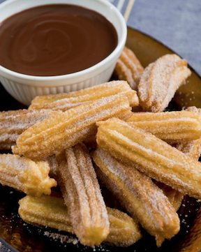
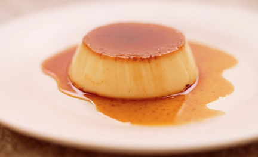
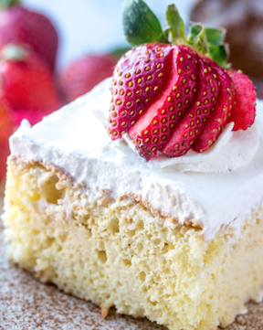
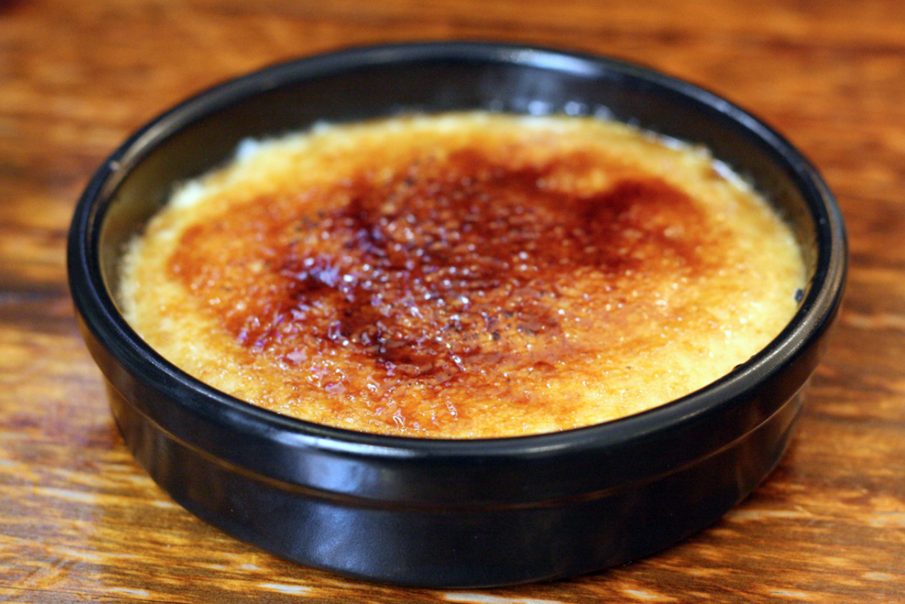
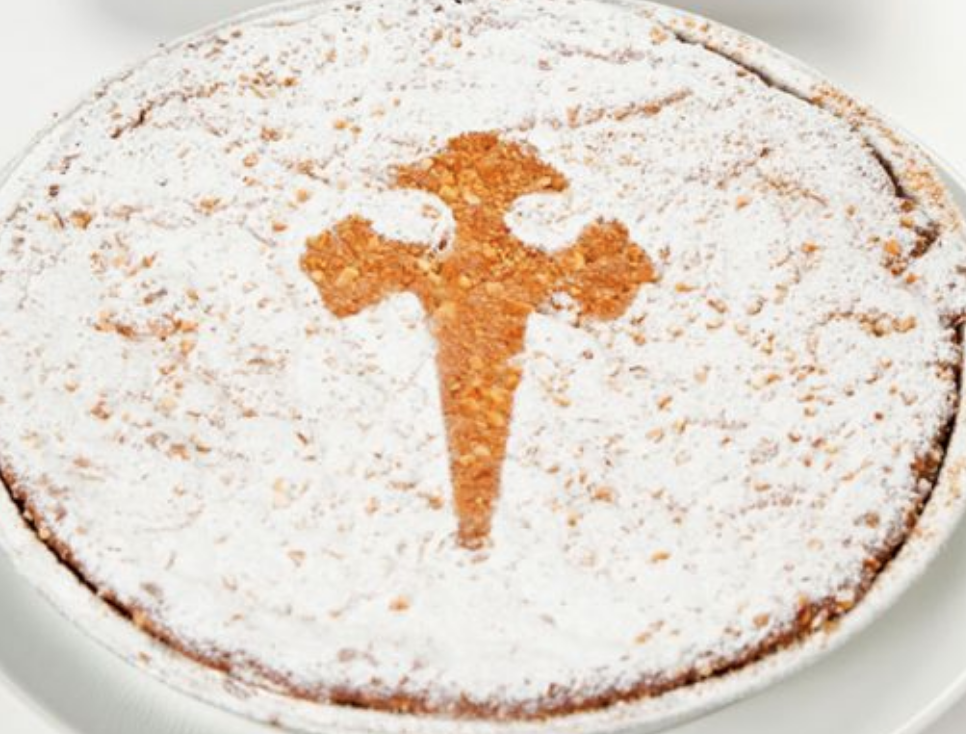

| Churros |

|
- Description: A fried-dough pastry usually eaten with chocolate
- Difficulty Level: Medium
- Link to Recipe: Churros
|
| Flan |

|
- Description: A dessert made out of sweetened egg custard with a caramel topping
- Difficulty Level: Hard
- Link to Recipe: Flan
|
| Tres Leches |

|
- Description: A sponge cake soaked in three kinds of milk: evaporated milk, condensed milk, and heavy cream.
- Difficulty Level: Hard
- Link to Recipe: Tres Leches Cake
|
| Crema Catalana |

|
- Description: A Spanish custard dessert very similar to crème brulee.
- Difficulty Level: Easy
- Link to Recipe: Crema Catalana
|
| Tarta de Santiago |

|
- Description: An almond cake or pie from Galicia with origin in the Middle Ages. The top of the cake is decorated with powdered sugar creating a silhouette of the sword or cross of St. James.
- Difficulty Level: Easy
- Link to Recipe: Tarta de Santiago
|